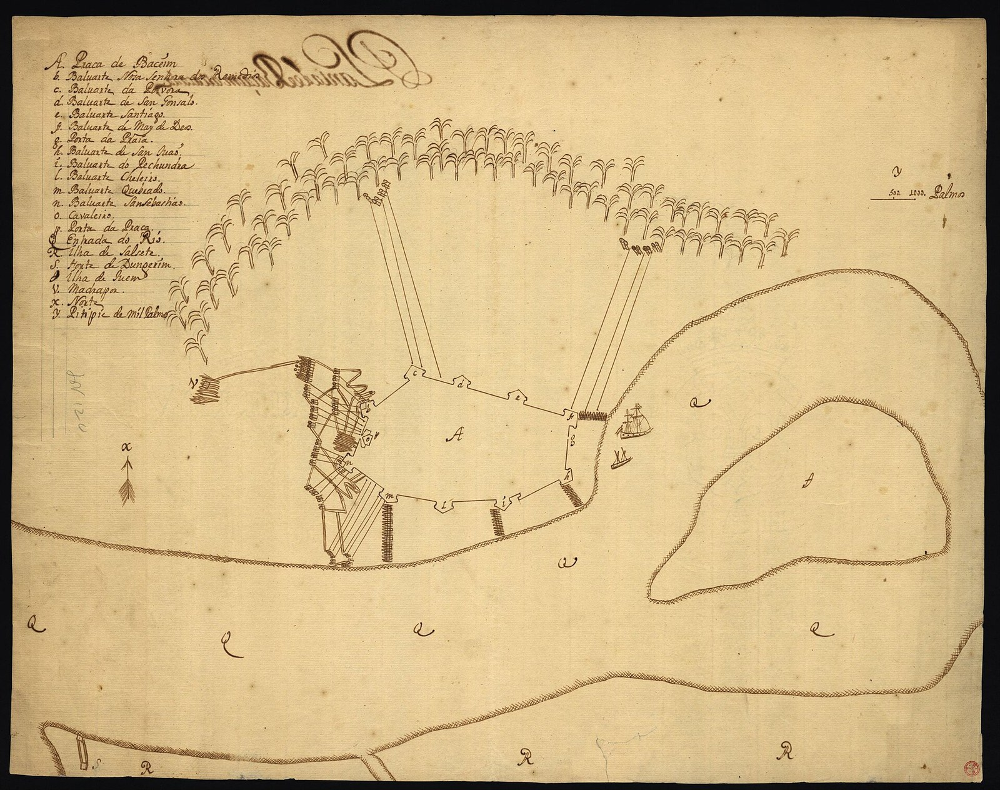

Bassein, 1739
Chimaji Appa’s capture of the Portuguese fortress of Baçaim ended the Província do Norte and left Bombay surrounded by Maratha territory.

Baçaim, Bassein to the English and now Vasai, was the capital of the Portuguese Província do Norte, the strip of coast and islands between Daman and Bombay that Portugal had held since 1534. It had a cathedral, convents, a fidalgo society and a stone fortress. In 1737 the Peshwa’s brother Chimaji Appa opened a campaign against the province, taking Thane and most of Salsette island that year and then reducing the outlying forts one by one. The siege of Baçaim itself began on 17 February 1739. Maratha sappers mined the walls, the garrison repulsed several assaults at heavy cost, and on 16 May 1739 the Portuguese commander capitulated on terms. The garrison marched out with colours flying and drums beating and was shipped to Bombay; the Maratha flag went up over the fort on 23 May.
Portuguese losses in the siege were reckoned at about eight hundred. The Marathas also took Chaul the following year, leaving Portugal only Daman, Diu and Goa on the west coast. Churches in the conquered territory were closed or demolished, and the Christian population of Salsette and Bassein, many of them converts of the previous two centuries, came under Maratha revenue administration. The Company at Bombay, which had watched the campaign with some alarm, stayed neutral, took in Portuguese refugees, and noted that its island was now bounded on every landward side by the Peshwa.
Bassein was one of the most consequential Indian victories over a European fortified possession in the eighteenth century, and it closed the Portuguese chapter of the Deccan that had opened at Goa in 1510. It also set up the geography of the next eighty years. Salsette and Bassein were what the Company wanted from the Marathas in the 1770s; Salsette it took in 1774, and at Bassein itself, in December 1802, Bajirao II signed the treaty that made the Peshwa a Company dependant.
In the story
Bassein shows the oldest European layer in the Deccan removed by the newest Indian one. The Portuguese had been a sovereign presence on the coast since before Vijayanagara fell; in 1739 they became a remnant at Goa. But the conquest also brought the Marathas to the edge of Bombay harbour, and the fortress they took became, in 1802, the place where the Company took the Peshwa.
In the map collection
Bellin, Plan de Bombay (1764) · d’Après de Mannevillette, Plan du Port de Bombay (1810)
In the chronology
- February–May 1739Chimaji Appa’s campaign captures Bassein and most of Portugal’s Northern Province, ending the Portuguese position as a major territorial power north of Goa.
Sources
- Uday S. Kulkarni, The Era of Bajirao: An Account of the Empire of the Deccan (Mula Mutha Publishers, Pune, 2016)
- V. G. Dighe, Peshwa Bajirao I and Maratha Expansion (Karnatak Publishing House, Bombay, 1944)
- Sanjay Subrahmanyam, The Portuguese Empire in Asia, 1500–1700: A Political and Economic History (Longman, London, 1993)